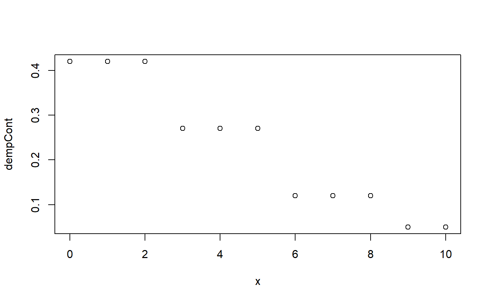
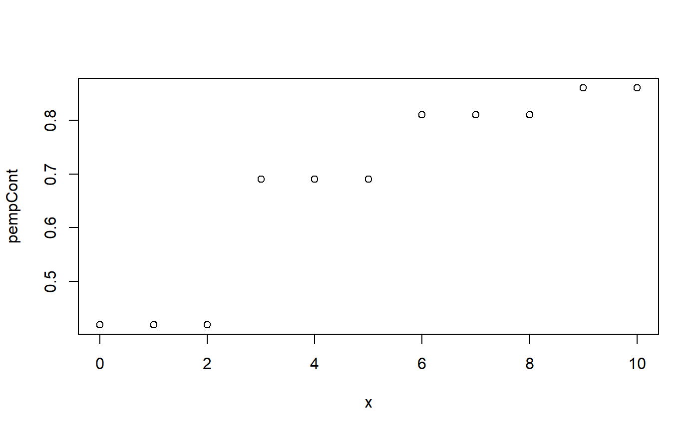
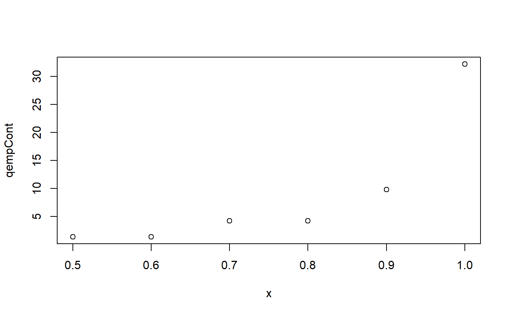

Fit Empirical Distribution
fit_empirical(x)
Arguments
| x | integer or double vector |
|---|
Value
if integer vector then list of family functions for d, p, q, r, and parameters based on each integer value. if it is a double vector then list of family functions for d, p, q, r, and parameters based on Freedman-Diaconis rule for optimal number of histogram bins.
Examples
set.seed(562) x <- rpois(100, 5) empDis <- fit_empirical(x) # probability density function plot(empDis$dempDis(0:10), xlab = 'x', ylab = 'dempDis')# cumulative distribution function plot(x = 0:10, y = empDis$pempDis(0:10), #type = 'l', xlab = 'x', ylab = 'pempDis')# quantile function plot(x = seq(.1, 1, .1), y = empDis$qempDis(seq(.1, 1, .1)), type = 'p', xlab = 'x', ylab = 'qempDis')# random sample from fitted distribution summary(empDis$r(100))#> Min. 1st Qu. Median Mean 3rd Qu. Max. #> 1.00 3.00 5.00 4.71 7.00 10.00empDis$parameters#> 0 1 2 3 4 5 6 7 8 9 10 #> 0.01 0.08 0.14 0.09 0.08 0.24 0.07 0.11 0.07 0.09 0.02set.seed(562) x <- rexp(100, 1/5) empCont <- fit_empirical(x) # probability density function plot(x = 0:10, y = empCont$dempCont(0:10), xlab = 'x', ylab = 'dempCont')# cumulative distribution function plot(x = 0:10, y = empCont$pempCont(0:10), #type = 'l', xlab = 'x', ylab = 'pempCont')# quantile function plot(x = seq(.5, 1, .1), y = empCont$qempCont(seq(.5, 1, .1)), type = 'p', xlab = 'x', ylab = 'qempCont')# random sample from fitted distribution summary(empCont$r(100))#> Min. 1st Qu. Median Mean 3rd Qu. Max. #> 1.394 1.394 4.205 4.871 4.205 32.200empCont$parameters#> (-0.0217,2.81] (2.81,5.6] (5.6,8.4] (8.4,11.2] (11.2,14] #> 0.42 0.27 0.12 0.05 0.06 #> (14,16.8] (16.8,19.6] (19.6,22.4] (22.4,25.2] (25.2,28] #> 0.01 0.04 0.01 0.01 0.00 #> (28,30.8] (30.8,33.6] #> 0.00 0.01